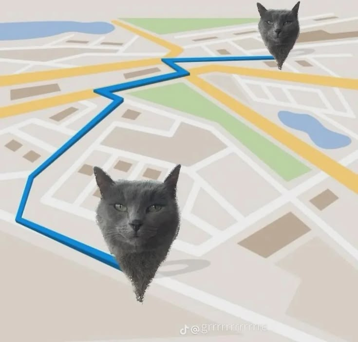
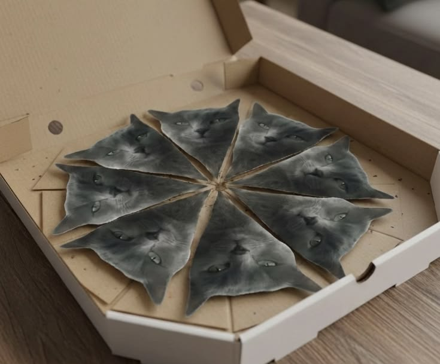
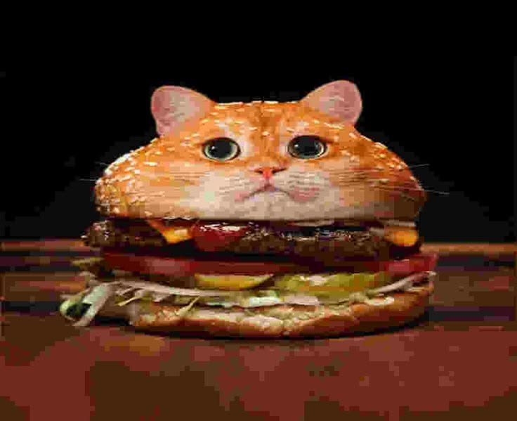
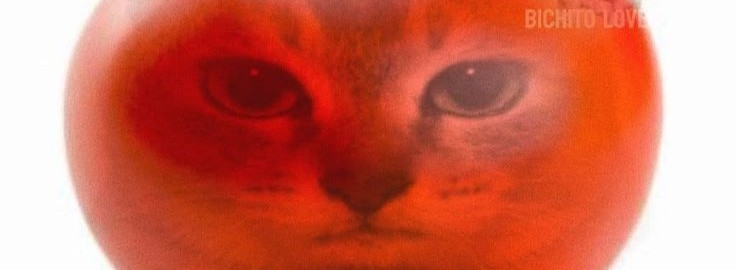
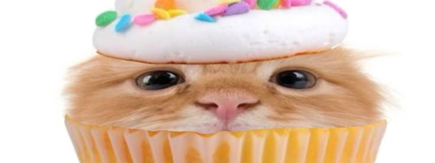
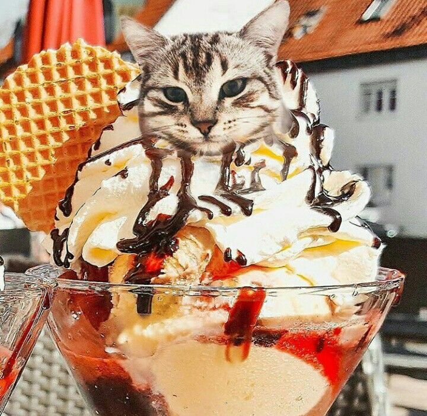
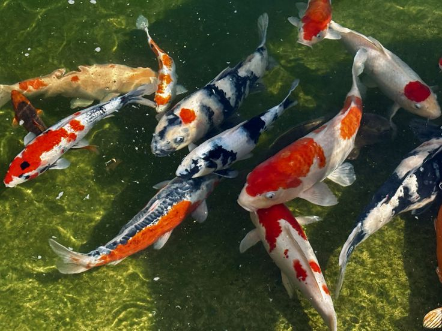

Our café is located in Kyiv, on Podil — 27 Nyzhnii Val Street. The interior is designed in light pastel colors with a modern minimalist style and cat-themed elements. Soft lighting, cozy furniture, and stylish décor create a comfortable atmosphere for relaxation and enjoying desserts.
Updated 1 second ago

Our café offers a wide selection of desserts for a quick snack and sweet breaks throughout the day. The assortment includes fresh buns, croissants, and other baked goods made daily. We also offer different types of ice cream with both classic and signature flavors. A separate category includes sweets: candies, pastries, and light desserts. Drinks include coffee, tea, cold beverages, and seasonal special offers. The entire menu is designed so that every visitor can quickly find something tasty.
Director - 1 minute ago

The café is staffed by a team of baristas, pastry chefs, and service personnel who ensure high-quality service and fresh desserts every day. The café is open daily from 08:00 to 22:00, so guests can visit for breakfast, a quick snack, or an evening dessert at any convenient time.
One cat per order as gift!



Our café combines high-quality desserts, fresh baked goods, and a wide selection of drinks for a daily snack. We focus on a cozy atmosphere, fast service, and consistently high product quality. It is easy to find something tasty for any mood or time of day.

Besides Kyiv, our café can be found in several cities: Lviv (7 Stepana Bandery Street), Kharkiv (45 Nauky Avenue), Odesa (12 Deribasivska Street), and Dnipro (18 Yavornytskoho Street). Each location maintains the same cozy atmosphere, quality desserts, and a wide selection of drinks for a quick
Our café regularly features seasonal promotions that change throughout the year. In summer, you can enjoy discounted ice cream and cold drinks, while in winter we offer hot drinks and sweets at special prices. We also periodically launch promotions on baked goods and desserts to make your snack even more enjoyable and affordable.